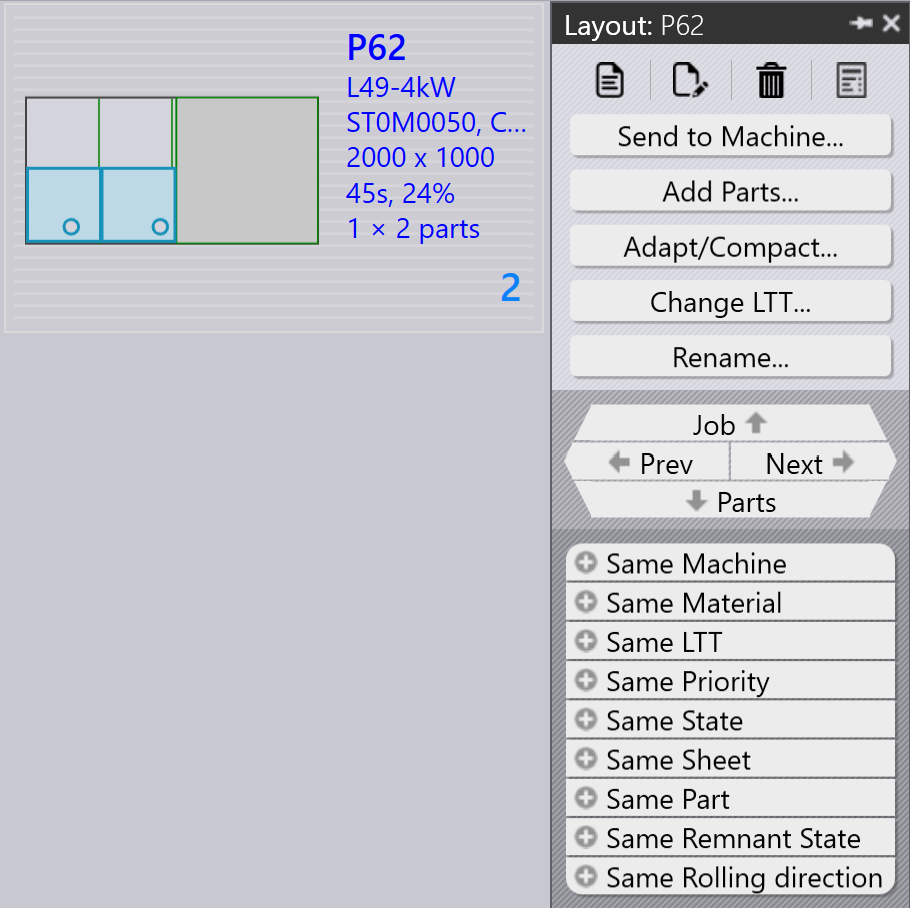

Ροή εργασίας
Το TruSmartCAM είναι ένα Σύστημα Εκτέλεσης Παραγωγής που διαχειρίζεται και βελτιστοποιεί διαδικασίες κατασκευής λαμαρίνας. Μια ροή εργασίας στο TruSmartCAM αποτελείται από μια σειρά βημάτων που ακολουθείτε για να ολοκληρώσετε μια συγκεκριμένη εργασία ή διαδικασία. Μπορείτε να προσαρμόσετε τη ροή εργασίας ώστε να ταιριάζει σε διαφορετικές διαδικασίες κατασκευής και να την προσαρμόσετε στις συγκεκριμένες ανάγκες σας. Η ροή εργασίας στο TruSmartCAM περιλαμβάνει συνήθως τα ακόλουθα βήματα:
1. Διαμόρφωση του συστήματος
Διαμορφώστε το TruSmartCAM ώστε να ταιριάζει με το περιβάλλον κατασκευής σας. Αυτό το θεμελιώδες βήμα περιλαμβάνει τον ορισμό μηχανών με τις δυνατότητες και τις παραμέτρους τους, την προσθήκη διαθέσιμων υλικών και εύρους πάχους, τη διαμόρφωση βιβλιοθηκών εξοπλισμού με διατρητήρες και μήτρες, τη δημιουργία φύλλων ρύθμισης για διαφορετικές διαμορφώσεις μηχανών, και τη διαχείριση λογαριασμών χρηστών με κατάλληλα δικαιώματα. Ένα σωστά διαμορφωμένο σύστημα διασφαλίζει ακριβή επεξεργασία και αποτρέπει σφάλματα σε μεταγενέστερα στάδια. Αυτή η ρύθμιση εκτελείται συνήθως μία φορά κατά την αρχική ανάπτυξη, με περιοδικές ενημερώσεις καθώς το εργοστάσιό σας εξελίσσεται.
Για περισσότερες πληροφορίες, ανατρέξτε στα Add/Remove machine, Material, Sheets, Setup tooling, και Configure users.

2. Προσθήκη εξαρτημάτων στη βιβλιοθήκη
Εισάγετε δισδιάστατα ή τρισδιάστατα εξαρτήματα CAD στη Βιβλιοθήκη εξαρτημάτων χρησιμοποιώντας υποστηριζόμενες μορφές όπως αρχεία DXF, DWG ή STEP. Κατά την εισαγωγή, το TruSmartCAM αναλύει αυτόματα τη γεωμετρία του εξαρτήματος, επαληθεύει την κατασκευασιμότητα, αναθέτει την απαιτούμενη τεχνολογία λαμαρίνας (λέιζερ, διάτρηση ή συνδυασμό), και δημιουργεί μικρογραφίες προεπισκόπησης. Τα εισαγόμενα εξαρτήματα εμφανίζονται ως πλακίδια στην προβολή βιβλιοθήκης, όπου τα χρωματικά κωδικοποιημένα εικονίδια υποδεικνύουν την κατάσταση του εξαρτήματος, τον τύπο τεχνολογίας, τις απαιτήσεις υλικού και τυχόν εντοπισμένα προβλήματα. Αυτό το οπτικό σύστημα επιτρέπει την γρήγορη αξιολόγηση της ετοιμότητας του εξαρτήματος με μια ματιά.
Για περισσότερες πληροφορίες, ανατρέξτε στο Library.

3. Επαλήθευση εξαρτημάτων και εξοπλισμού
Ελέγξτε κάθε εισαγόμενο εξάρτημα για πιθανά προβλήματα παραγωγής. Επαληθεύστε ότι η γεωμετρία του εξαρτήματος είναι έγκυρη και κατασκευάσιμη, ότι οι αναθέσεις εξοπλισμού είναι σωστές και διαθέσιμες, ότι οι επιλογές υλικού και πάχους ταιριάζουν με το απόθεμα, και ότι οι ακολουθίες κάμψης είναι σωστά ορισμένες για τα διαμορφωμένα εξαρτήματα. Εάν εντοπιστούν προβλήματα, ανοίξτε το εξάρτημα στο TecZone για να τροποποιήσετε τη γεωμετρία, να αναθέσετε εκ νέου ή να βελτιστοποιήσετε τον εξοπλισμό, να προσαρμόσετε τις παραμέτρους επεξεργασίας ή να διορθώσετε τις προδιαγραφές υλικού. Η επίλυση προβλημάτων σε αυτό το στάδιο αποτρέπει καθυστερήσεις παραγωγής και μειώνει τα απορρίμματα κατά την κατασκευή.
Για περισσότερες πληροφορίες, ανατρέξτε στα Part state και Tooling status.

4. Οργάνωση εξαρτημάτων σε εργασίες
Ομαδοποιήστε επαληθευμένα εξαρτήματα σε εργασίες βάσει των απαιτήσεων παραγωγής. Μια εργασία αντιπροσωπεύει μια λογική μονάδα παραγωγής που μπορεί να περιλαμβάνει εξαρτήματα από μία παραγγελία πελάτη, εξαρτήματα που μοιράζονται κοινά υλικά και πάχος, εξαρτήματα με παρόμοιες προθεσμίες παράδοσης ή ένα συνδυασμό βάσει της στρατηγικής παραγωγής σας. Οι εργασίες παρέχουν έναν περιέκτη για τον σχεδιασμό, επιτρέπουν την ομαδική επεξεργασία σχετικών εξαρτημάτων, ενεργοποιούν την αποτελεσματική αξιοποίηση υλικού μέσω κατανομής, και απλοποιούν την παρακολούθηση και την αναφορά. Οι εργασίες μπορούν να δημιουργηθούν χειροκίνητα επιλέγοντας εξαρτήματα ή αυτόματα βάσει προκαθορισμένων κανόνων και φίλτρων.
Για περισσότερες πληροφορίες, ανατρέξτε στο Jobs.

5. Σχεδιασμός εργασιών σε μηχανές παραγωγής
Μόλις δημιουργηθεί μια εργασία, αναθέστε την σε μια κατάλληλη μηχανή παραγωγής. Λάβετε υπόψη τις δυνατότητες της μηχανής συμπεριλαμβανομένων των υποστηριζόμενων τεχνολογιών (λέιζερ, διάτρηση, πυργίσκος), τη χωρητικότητα υλικού και πάχους, τον διαθέσιμο εξοπλισμό και το τρέχον φόρτο εργασίας. Εάν υπάρχουν πολλές κατάλληλες μηχανές, επιλέξτε βάσει της προτεραιότητας παραγωγής, της διαθεσιμότητας της μηχανής, των απαιτήσεων ρύθμισης ή της βελτιστοποίησης κόστους. Η ανάθεση μπορεί να είναι χειροκίνητη για ευελιξία ή αυτόματη βάσει προδιαμορφωμένων κανόνων και αλγορίθμων χρονοπρογραμματισμού μηχανών.
Για περισσότερες πληροφορίες, ανατρέξτε στο Plan job.

6. Έκδοση NC για εργασίες
Σε αυτό το στάδιο, δημιουργούνται οι διατάξεις κοπής. Μπορείτε ακόμη να επεξεργαστείτε τις διατάξεις και να προσθέσετε τεχνολογίες κοπής στη διάταξη χρησιμοποιώντας το TecZone. Στη συνέχεια, εξάγετε την έξοδο NC και μεταφέρετέ την στον ελεγκτή της μηχανής ή σε μια καθορισμένη τοποθεσία δικτύου. Η εργασία κλειδώνεται έπειτα για να αποτραπούν περαιτέρω τροποποιήσεις, και η κατάστασή της ενημερώνεται σε "Released" για την παρακολούθηση της παραγωγής.
Για περισσότερες πληροφορίες, ανατρέξτε στο Send/Recall NC.

7. Ολοκλήρωση παραγωγής και οριστικοποίηση εργασιών
Εκτελέστε την εκδοθείσα εργασία στην ανατεθειμένη μηχανή. Κατά την παραγωγή, ο χειριστής της μηχανής ακολουθεί το πρόγραμμα NC, επαληθεύει την ποιότητα των εξαρτημάτων κατά την κοπή, διαχειρίζεται τη φόρτωση και εκφόρτωση υλικού, και αντιμετωπίζει τυχόν συναγερμούς ή προβλήματα της μηχανής. Μετά την ολοκλήρωση της παραγωγής, σημειώστε μεμονωμένα εξαρτήματα ή ολόκληρη την εργασία ως ολοκληρωμένη στο TruSmartCAM. Αυτό το τελικό βήμα ενημερώνει τα αρχεία αποθέματος, καταγράφει τον πραγματικό χρόνο παραγωγής και τη χρήση υλικού, αρχειοθετεί τα δεδομένα της εργασίας για αναφορά και ανάλυση, και ολοκληρώνει τον κύκλο της ροής εργασίας.
Για περισσότερες πληροφορίες, ανατρέξτε στο Mark complete.